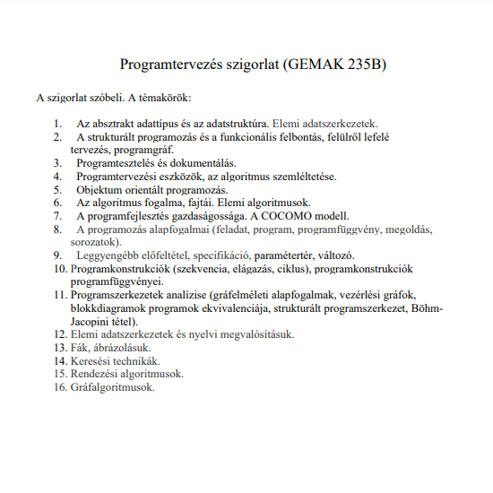

1. Az absztrakt adattípus és az adatstruktúra. Elemi adatszerkezetek. 2. A strukturált programozás és a funkcionális felbontás, felülről lefelé tervezés, programgráf. 3. Programtesztelés és dokumentálás. 4. Programtervezési eszközök, az algoritmus szemléltetése. 5. Objektum orientált programozás. 6. Az algoritmus fogalma, fajtái. Elemi algoritmusok. 7. A programfejlesztés gazdaságossága. A COCOMO modell. 8. A programozás alapfogalmai (feladat, program, programfüggvény, megoldás, sorozatok). 9. Leggyengébb előfeltétel, specifikáció, paramétertér, változó. 10. Programkonstrukciók (szekvencia, elágazás, ciklus), programkonstrukciók programfüggvényei. 11. Programszerkezetek analízise (gráfelméleti alapfogalmak, vezérlési gráfok, blokkdiagramok programok ekvivalenciája, strukturált programszerkezet, BöhmJacopini tétel). 12. Elemi adatszerkezetek és nyelvi megvalósításuk. 13. Fák, ábrázolásuk. 14. Keresési technikák. 15. Rendezési algoritmusok. 16. Gráfalgoritmusok. |
 |